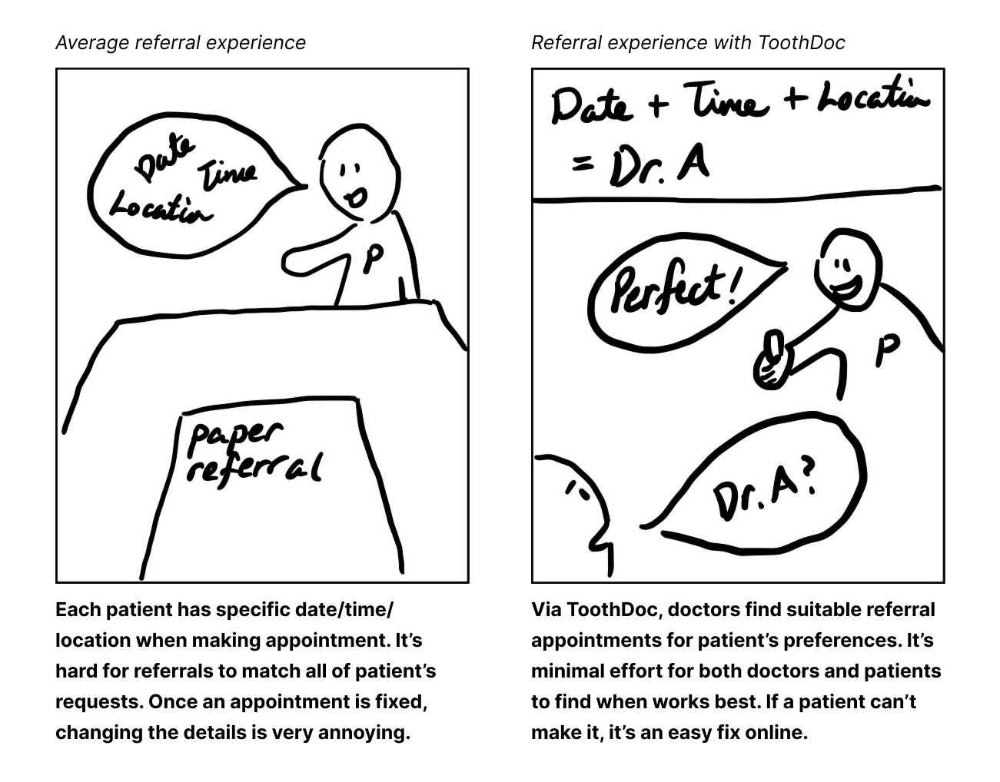
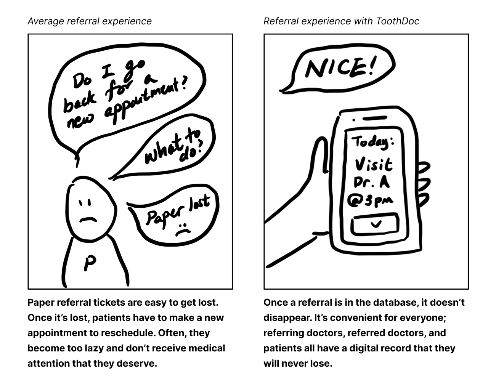
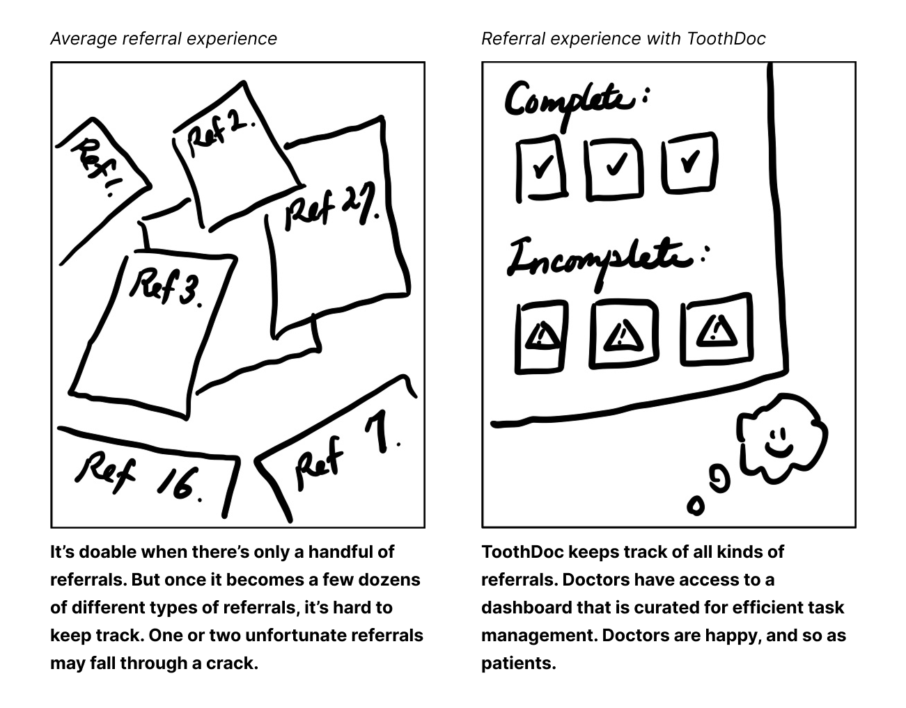
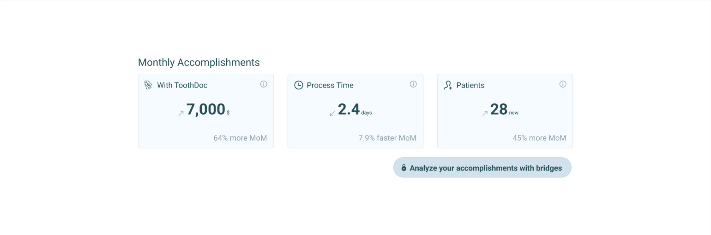
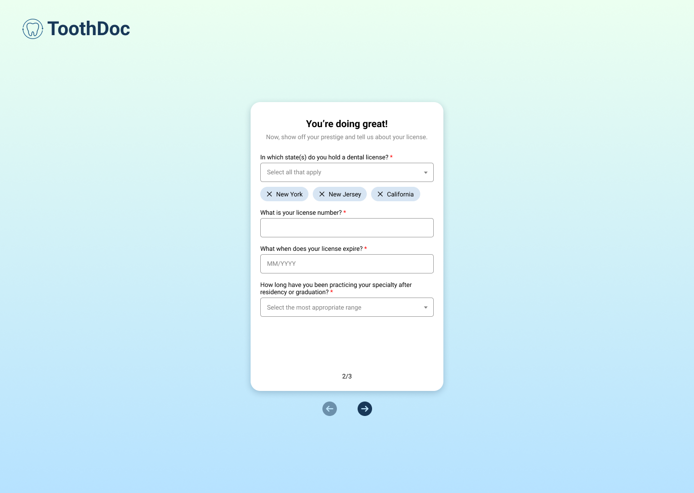
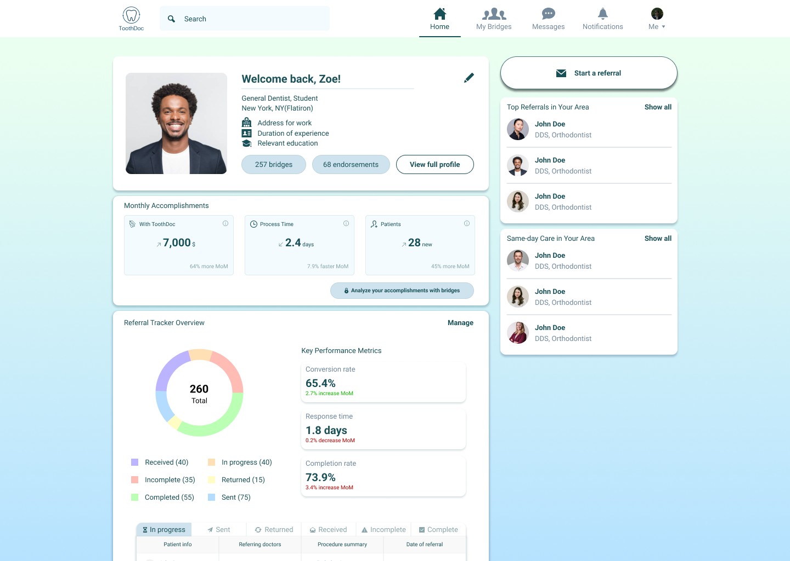

ToothDoc | Jan ~ May 2025
Designing the MVP for a B2B dental referral management platform

OVERVIEW
ToothDoc is a comprehensive B2B platform designed to streamline tedious dental referral operations into easy, quick flows.
During the internship, I had the chance to lead design on the end-to-end journey of the MVP, before user testing.

OUTCOMES
Complete MVP Design
Delivered comprehensive design system and user flows
Internal Documentation
Created internal documentation for future initiatives
Design System
Established scalable design patterns and components
VALUE PROPOSITION
Founder's firsthand experience of pain points in dental referral operations
As a dentist herself, she saw a problem in the dental referral process. Many still operate with pen and paper, which often gets lost or misplaced. This slows down the referral process and can lead to missed opportunities.



Flexibility
A referral network with various specialties, locations, and availability.
Convenient Tracking
With an online database, losing a paper ticket is no longer a problem.
Easy Management
No longer a fragmented system of countless paper tickets, for dentists.
DESIGN PROCESS
My design approach focused on translating the founder's visions into an intuitive interface. In weekly meetings, we validated the core functionality and features, and discussed the design direction.

We agreed on the priority of Dashboard and Referral, as they would be the most used and helpful features for dentists.

DESIGN EXPLORATION
Visualizing referral tracker data
A person would have 6 different status regarding the referrals. I had to come up with a clear and intuitive way to categorize and visualize the data. I explored the usage of icons, colors, and shapes to distinguish the statuses.
Upon exploring and discussing with the team, we decided to use a combination of icons and colors to distinguish the statuses. This was mainly because some colors have intuitive meanings, and well-chosen icons are recognizable. We also decided to incorporate a pie chart to visualize the proportions of each status – with a plan to test if the users find such visualization helpful.
Highlighting the wins
By the end of the internship, I pitched an idea to emphasize ToothDoc's value propositions. By displaying the direct benefit of ToothDoc's network and referral system, I sought for ways that would encourage customer retention.

FINAL DESIGNS
Onboarding

Dashboard

Referral Flow

Quick Referral
TAKEAWAYS
Early & Frequent Communication
Especially for the 0 to 1 of an early stage startup, communication is key. It's important to overload the communication to align ourselves with the founders' vision.
Scalable Design for Future Iterations
Often times, the design itself isn't final. It's important to design for scalability and future iterations.
Design & Development
I learned that they flow together. It's important to make informed design decisions, in terms of technicality, to ship things faster.